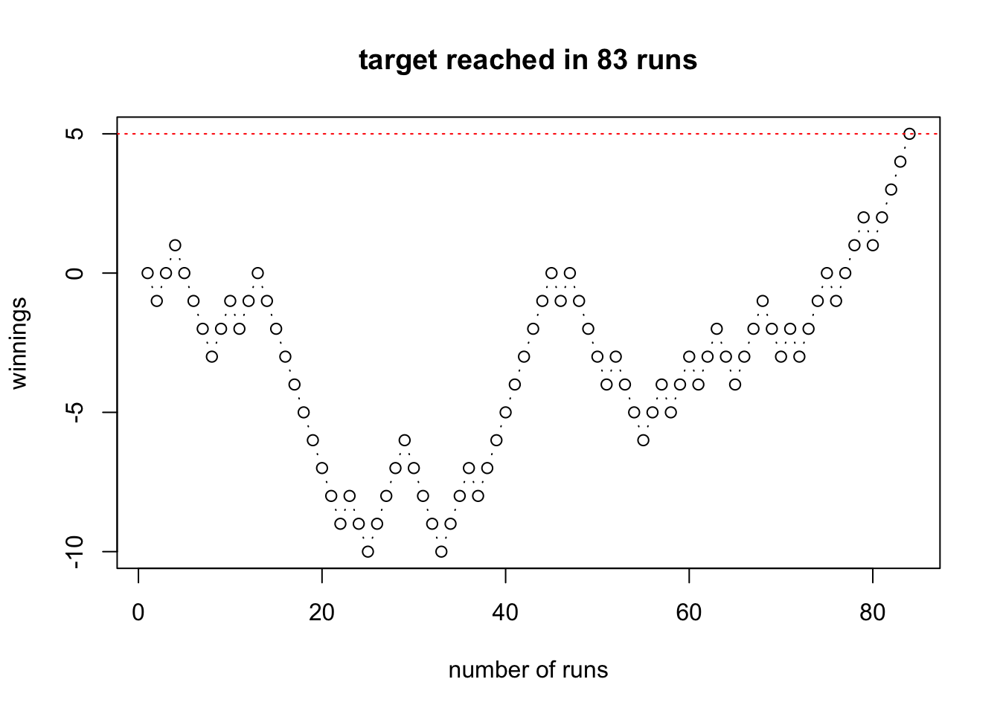
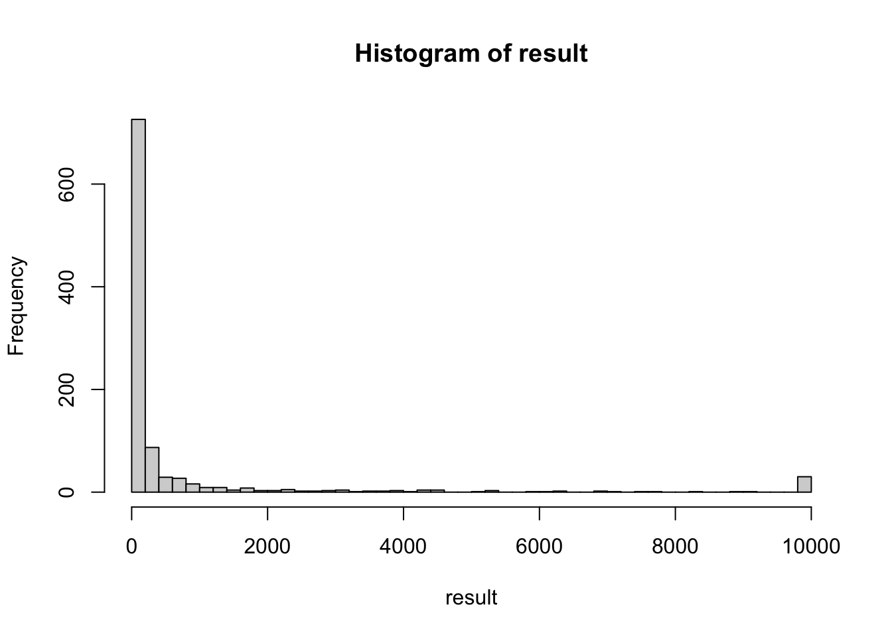
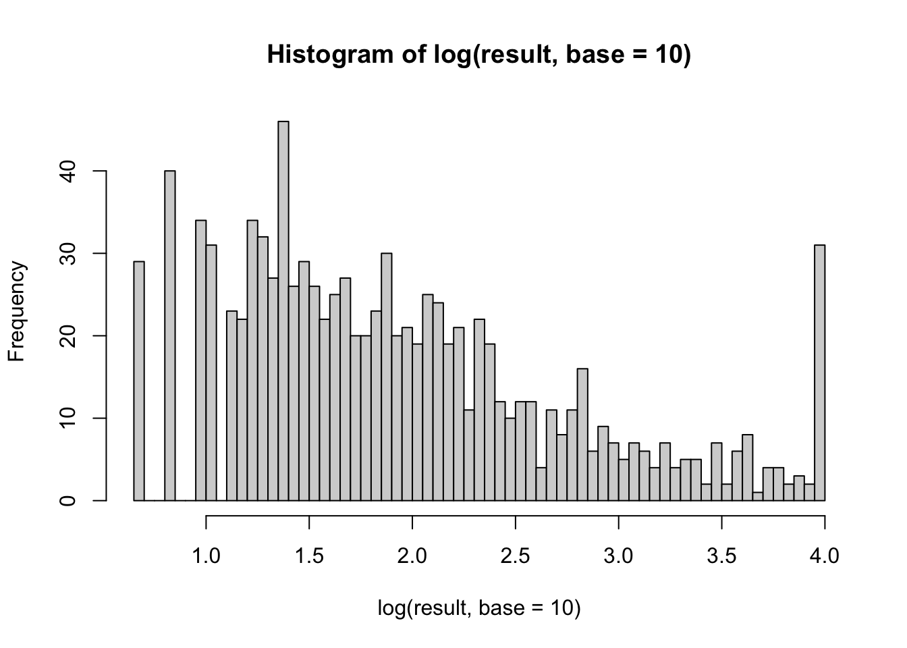
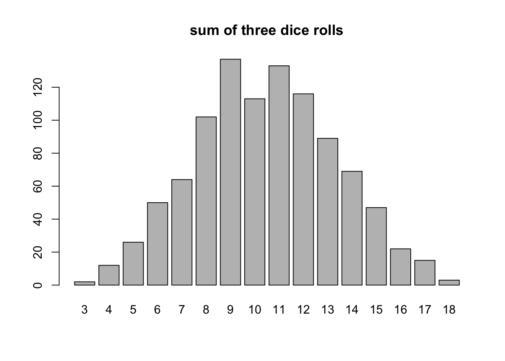
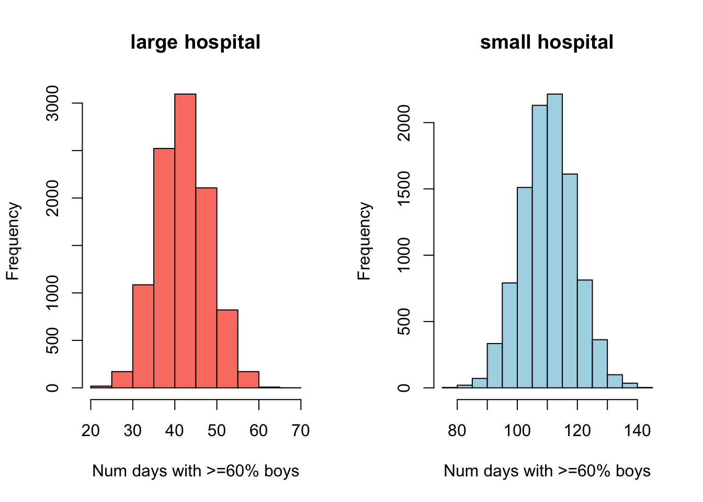

Suppose we roll a pair of fair dice. A gambler bets that, in 10 rolls, a pair of six would show up. What is his chance of winning? We wrote down the four steps to carry out this simulation in Lecture 1 Example 3. Write code for this simulation and estimate his chance of winning.
Show solution
# 1. ONE simulation functionsim_dice_pair <-function(){ roll1 <-sample(x=c(1:6),size=10,replace=T) roll2 <-sample(x=c(1:6),size=10,replace=T)## save win/lose in each simulationif(max(roll1+roll2)==12){return('win') # win if pair of six showed up }else{return('lose') }}# 2. Test the functionsim_dice_pair()
[1] "lose"
# 3. Initialize global simulation parametersNSIM <-1000result <-rep(NA,NSIM)# 4. Repeat the simulation NSIM times#### Method 1: 'for' loopfor(i in1:NSIM){ result[i] <-sim_dice_pair()}#### Method 2: Base R replicate()result <-replicate(NSIM, sim_dice_pair())# 5. Summarize resultstable(result)/NSIM
result
lose win
0.776 0.224
## to compare: exact probability1-(35/36)^10
[1] 0.2455066
Question 2
You play a game with me as follows. A fair coin is tossed. If a head shows up, I give you a dollar. If a tail shows up, you give me a dollar. Suppose you keep playing this game until you win \(\$5\). Let \(Y\) be the length of the game you have to play. What is the distribution of \(Y\)? We wrote down the four steps to carry out this simulation in Lecture 1 Example 4b. Write code for this simulation and produce a histogram to estimate the distribution of \(Y\). Caution: as it is possible that you “never” reach \(\$5\), it is important to set an upperbound to the length of the game (i.e., if the length of the game has reached 10000, say, you quit the while loop regardless of your winning.)
The following code visualizes one round of the game, for demonstration purposes.
## global constant and initializationtarget <-5# target winningnum.game.max <-10000# maximum game length for the while loop current <-0# current net winningnum.game <-0# current game lengthcurrent.trace <- current # winning trajectory for plottingwhile((current<target)&(num.game<num.game.max)){ num.game <- num.game+1 current <- current +sample(c(-1,1),size=1,replace=T) current.trace <-c(current.trace,current)}# visualize resultif(num.game>=num.game.max){ mytitle='did not reach target in 10000 runs'}else{ mytitle=paste('target reached in',num.game,'runs')}plot(current.trace,type='b',main=mytitle,xlab='number of runs',ylab='winnings')abline(h=target,lty='dotted',col='red')

Show solution
# 1. ONE simulation functionsim_game_length <-function(target=5, num.game.max=10000){ current <-0# current net winning num.game <-0# current game lengthwhile((current<target)&(num.game<num.game.max)){ num.game <- num.game+1 current <- current +sample(c(-1,1),size=1,replace=T) }return(num.game)}# 2. Test the functionsim_game_length()
[1] 343
# 3. Initialize global simulation parametersNSIM <-1000num.game.max <-10000# maximum game length for the while loopresult <-rep(NA,NSIM)# 4. Repeat the simulation NSIM timesfor(i in1:NSIM){ result[i] <-sim_game_length(num.game.max=num.game.max)if(i %%1000==0){print(paste(Sys.time(),'...running simulation',i)) }}
Min. 1st Qu. Median Mean 3rd Qu. Max.
5.0 21.0 59.0 679.4 225.0 10000.0
hist(result,nclass=50)

# we can take log transformation when histogram is severely right skewedhist(log(result,base=10),nclass =50)

mean(result==num.game.max) #prob. that game length >= num.game.max
[1] 0.03
Question 3
Write code to carry out the simulation in Homework 1, question 2.
Suppose you roll three fair dice and calculate the sum of the three rolls. Is the sum more likely to be 9 or 10? You can simulate the result of three dice rolls on random.org/dice for a few times to get a sense. Use the four steps discussed in the lecture to describe how to estimate the probability that the sum is 9 and the probability that the sum is 10.
Show solution
# 1. ONE simulation functionsim_three_dice <-function(){ dices <-sample(c(1:6),size=3,replace=T) #sample 3 dicesreturn(sum(dices)) #store the sum of dices}# 2. Test the functionsim_three_dice()
[1] 13
# 3. Initialize global simulation parametersNSIM <-1000result <-rep(NA,NSIM)# 4. Repeat the simulation NSIM timesresult <-replicate(NSIM, sim_three_dice())# 5. Summarize resultsplot(as.factor(result),main='sum of three dice rolls')

Question 4
Write code to carry out the simulation in Homework 1, question 4.
The psychologist Tversky and his colleagues say that about four out of five people will answer (a) to the following question:
A certain town is served by two hospitals. In the larger hospital about 45 babies are born each day, and in the smaller hospital 15 babies are born each day. Although the overall proportion of boys is about 50 percent, the actual proportion at either hospital may be more or less than 50 percent on any day. At the end of a year, which hospital will have the greater number of days on which more than 60 percent of the babies born were boys?
the large hospital
the small hospital
neither: the number of days will be about the same.
Assume that the probability that a baby is a boy is 0.5. Decide, by simulation, what the right answer is and suggest why so many people go wrong.
Show solution
# 1. ONE simulation functionsim_hospital_year <-function(births_per_day){ year <-rep(NA,365) #to store percentage of boys each dayfor(d in1:365){ outcome <-sample(c(0,1),size=births_per_day,replace=T) year[d] <-mean(outcome) }return(sum(year>=0.6)) #number of days with >=60% boys}# 2. Test the functionsim_hospital_year(births_per_day=45)
[1] 47
sim_hospital_year(births_per_day=15)
[1] 112
# 3. Initialize global simulation parametersNSIM <-10000#number of years to simulateresult.large <-rep(NA,NSIM) result.small <-rep(NA,NSIM)# 4. Repeat the simulation NSIM timesresult.large <-replicate(NSIM, sim_hospital_year(births_per_day=45))result.small <-replicate(NSIM, sim_hospital_year(births_per_day=15))# 5. summarize resultssummary(result.large)
Min. 1st Qu. Median Mean 3rd Qu. Max.
20.00 38.00 42.00 42.48 47.00 67.00
summary(result.small)
Min. 1st Qu. Median Mean 3rd Qu. Max.
79.0 105.0 111.0 110.8 117.0 142.0
# visualize resultspar(mfrow=c(1,2))hist(result.large, xlab='Num days with >=60% boys', col='salmon',main='large hospital')hist(result.small, xlab='Num days with >=60% boys', col='lightblue',main='small hospital')

Question 5
Suppose that when cars drive past Drew toward downtown from 7am to 8am on a typical Sunday morning, \(41\%\) will turn onto Kings Rd., \(38\%\) will continue straight to Main St., and \(21\%\) will turn onto Park Ave. Assume that the number of cars driving past Drew toward downtown during that hour follows a Poisson distribution with parameter \(\lambda=6\). Let \(X\) be the number of cars that will drive on Main St. past the fork. Use simulation to answer the following questions.
What is the probability that 5 or more cars will drive on Main street past the fork from 7am to 8am on a typical Sunday morning (i.e., \(P(X\ge5)\))?
Estimate the distribution of \(X\) by plotting a histogram.
Show solution
# 1. ONE simulation functionsim_cars <-function(lambda=6, prob=0.38){ numcar <-rpois(1,lambda=lambda)return(rbinom(1,size=numcar,prob=prob))}# 2. Test the functionsim_cars()
[1] 4
# 3. Initialize global simulation parametersNSIM <-1000result <-rep(NA,NSIM)# 4. Repeat the simulation NSIM timesresult <-replicate(NSIM, sim_cars())# 5. summarize resultsmean(result>=5)
[1] 0.093
plot(as.factor(result),main='Number of cars that go to Main Street',col='salmon')